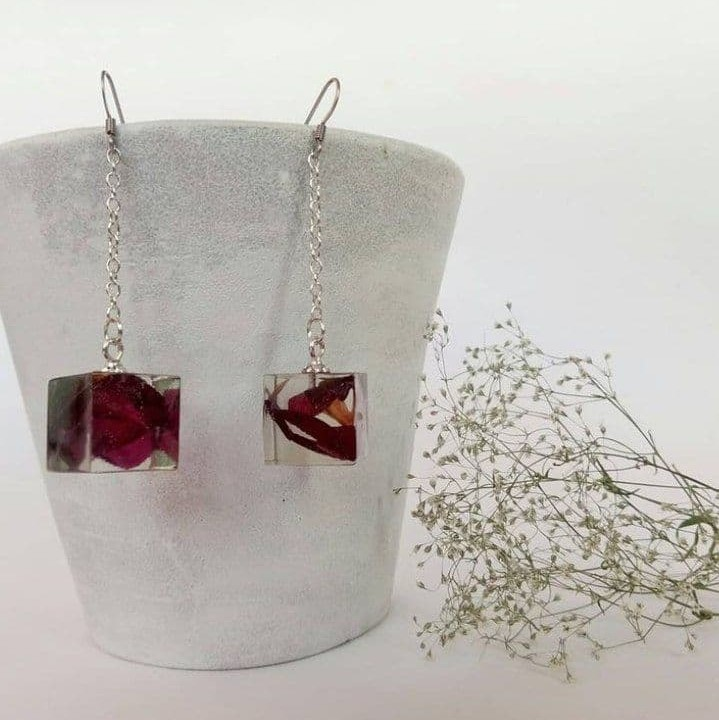

Roman Kozak
сережки

Кубічні кульчики із вишневими пелюстками . Засновник RK пише: "Ці купити лежали в мене досить давно і я ніяк не наважувався зробити з них сережки, але цей день настав! Як вам така форма кульчиків?"
200 грн